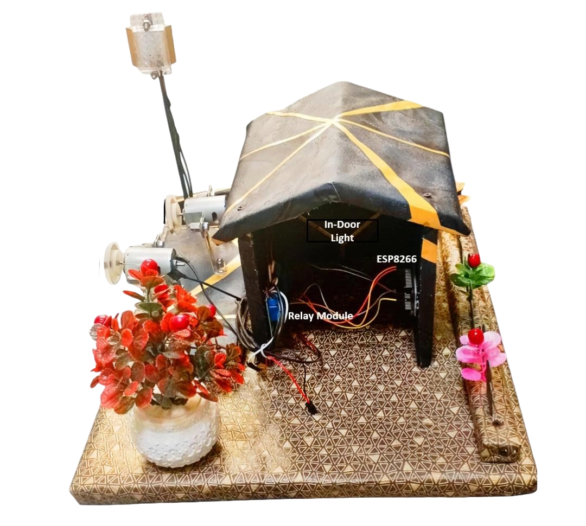

Academic Details
 (1).png)
Project

Project Title
Bio-Matric Initiate Apparatus
Discription:
I Create a automation system with extra security feature of Bio Matric System. The Biometric Initiate Apparatus System was implemented using an ESP8266 NodeMCU microcontroller, integrated with a fingerprint sensor for biometric verification. Once a valid fingerprint is detected, the ESP8266 connects to a Wi-Fi network and communicates with the Blynk mobile application. The app provides an interface to control four appliances (two motors and two lights) connected through a 4-channel relay module using C++ Programing Language. Jumper wires were used for hardware connections, and all appliances are operated remotely through the Blynk interface after biometric authentication, ensuring secure and seamless control.
About me
I'm a Full Stack Web Developer with hands-on experience in HTML, CSS, JavaScript, Node.js, and MongoDB.I'm fully Experienced to build Websites in WordPress, also enjoy working with Python and Django, and I’ve built projects using C/C , IoT devices, Bylink IoT Platform and basic Machine Learning. Teaching is something I truly enjoy, and I’ve worked as an instructor to help others learn practical tech skills. I'm also skilled in MS Office tools like Word, Excel, and PowerPoint. I love exploring new technologies and building things that make everyday tasks easier and smarter.